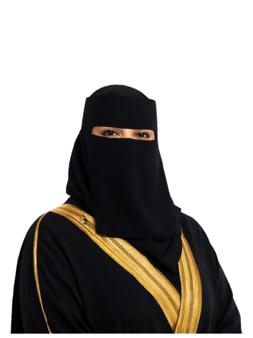
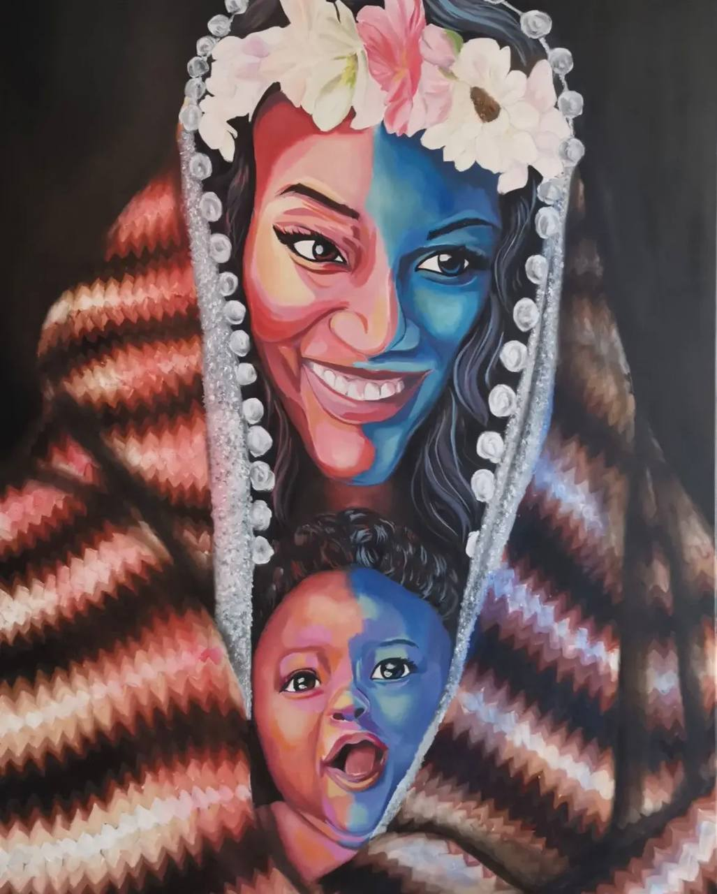
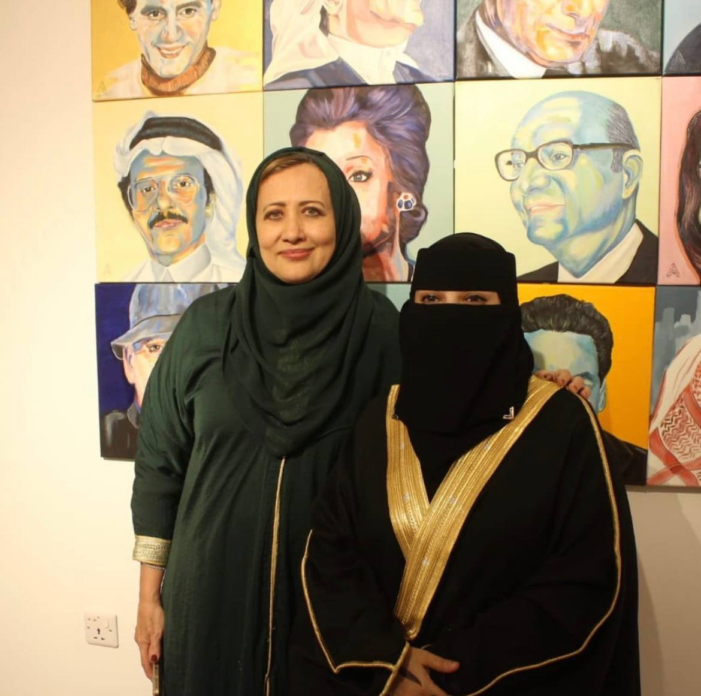
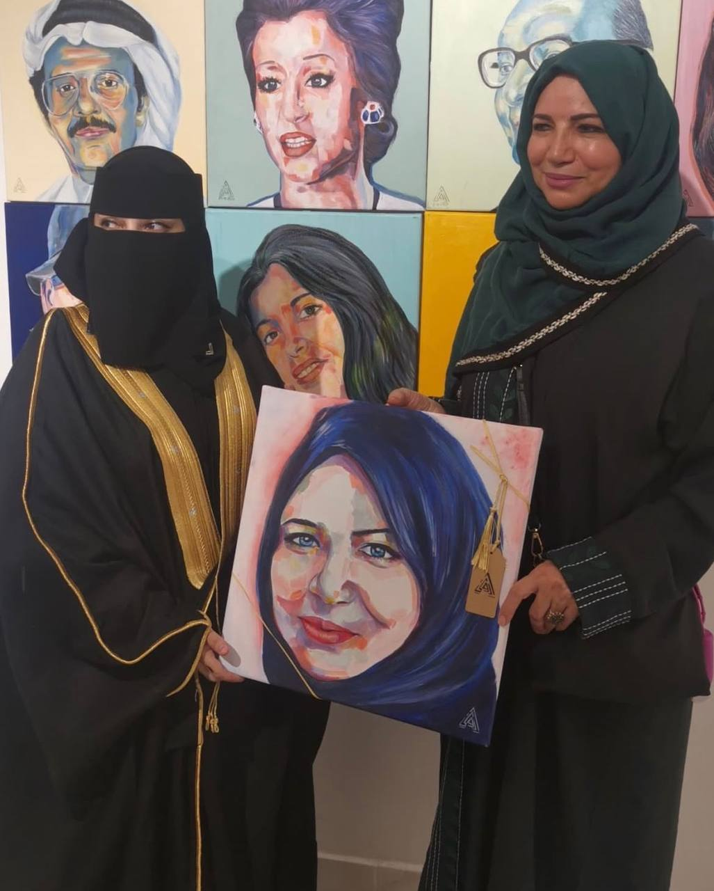
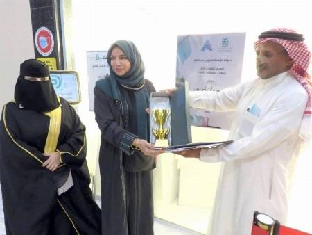
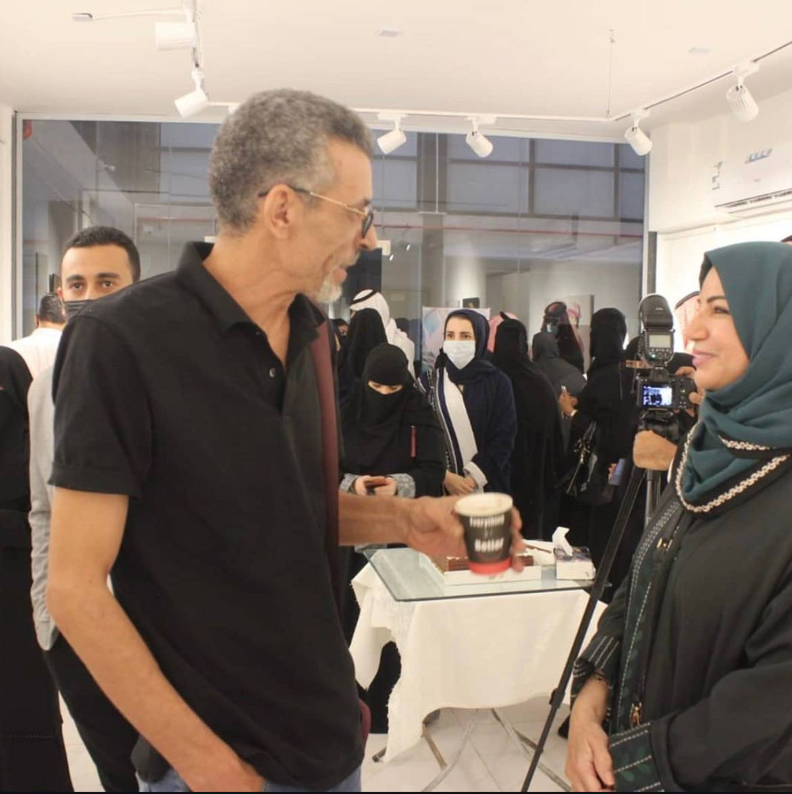

الفنانة أروى
رحلة فنية تجمع بين الإبداع، عرض الأعمال، ومشاركة الخبرة من خلال ورشات ملهمة ومميزة.
من هي اروى؟
اروى احمد الظيفي فنانة تشكيلية ترى في الفن مساحة صادقة للتعبير عن الإحساس والجمال والهوية. ومن خلال أعمالها، تسعى إلى تقديم تجربة بصرية لا تقف عند حدود الشكل، بل تحمل معنى ولمسة خاصة تظهر في تفاصيل كل عمل تقدمه. وبالنسبة لها، لا يُعد الفن مجرد ممارسة إبداعية، بل لغة تعبّر عمّا قد تعجز الكلمات عن وصفه


رؤيتها الفنية
تتميّز أعمال أروى باهتمام واضح بالتفاصيل، وحضور بصري يجمع بين الإحساس الإنساني والهوية الفنية الخاصة. وتميل في أعمالها إلى تقديم لوحات تحمل توازنًا بين الجمال والعمق والتعبير، مما يمنح كل عمل طابعًا فريدًا وبصمة يمكن تمييزها بسهولة. ومن خلال هذا الأسلوب، تقدّم أروى رؤية فنية تسعى إلى ملامسة المتلقي بصريًا ووجدانيًا في الوقت نفسه
مسيرتها الفنية
إلى جانب تجربتها الفنية، تُعرَف أروى بأنها مدرّبة معتمدة في الفنون التشكيلية والحرفية، وعضو سابق في مؤسسة مشروع رسام. كما ارتبط اسمها بمشاركات فنية ومعارض من أبرزها معرض همسات لونية في جدة, الذي ضم 60 عملًا فنيًا من أعمالها.




المعرض
ورش
انضم إلى الفنانة التشكيلية أروى أحمد الظيفي في دروس فعلية أونلاين مباشرة على منصة Zoom، متاحة للتسجيل والمشاهدة.
تقدم الورشة دورات مختلفة حسب نوع العمل الفني: لوحات زيتية، ورسوماً باستخدام الرصاص والفحم.
يبدأ المشاركون كل لوحة من الصفر ويتعلمون كيفية بنائها خطوة بخطوة حتى إكمالها بالكامل، مع إرشاد عملي حول التقنيات والأدوات، ومزج الألوان، والأسلوب الشخصي لأروى.
كما أن جميع الجلسات مسجلة بالكامل لكل اشتراك، بحيث يمكن للطلاب العودة إليها ومراجعتها في أي وقت حسب جدولهم الخاص.